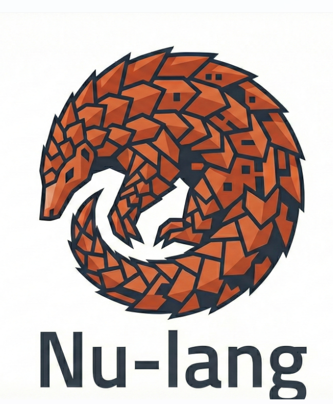

lib.rs — standard_rust
Standard Rust is Powerful...
VERBOSE
BOILERPLATE OVERLOAD
🦡
But why so much noise?
Rust (Standard)
Nu (High Density)
High Density Syntax
100 lines
→
50 lines
50% compression
Optimized for AI & Humans
Rust: 100 tokens
Nu: 50 tokens
⚡ Faster Inference
💰 Lower Cost • 🚀 Better Performance

Write code like you write thoughts.
Get Started →